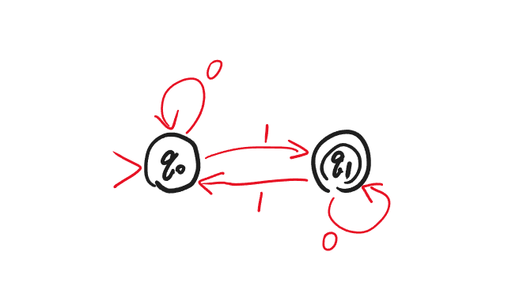
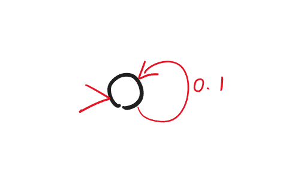
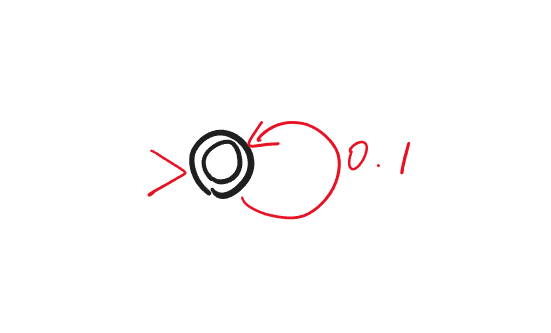
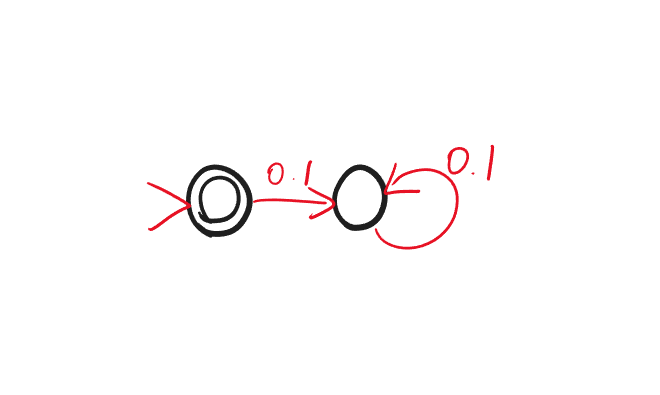
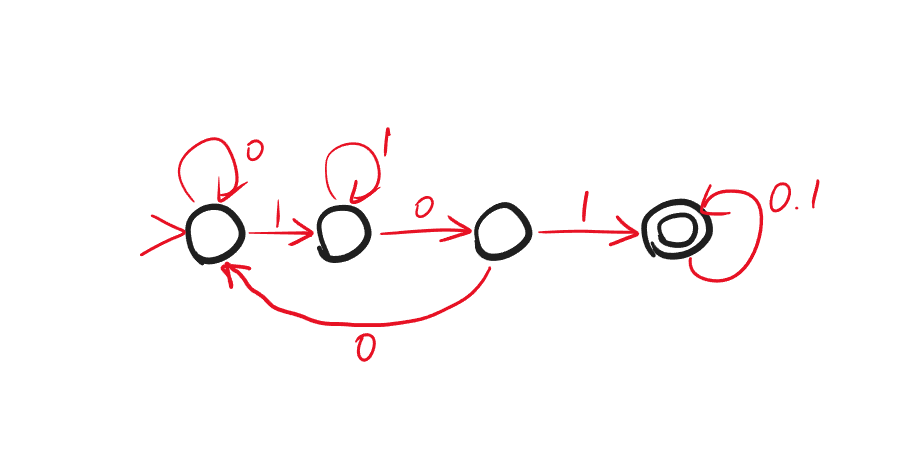
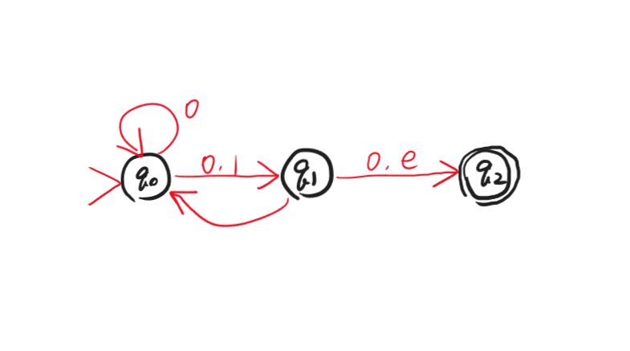
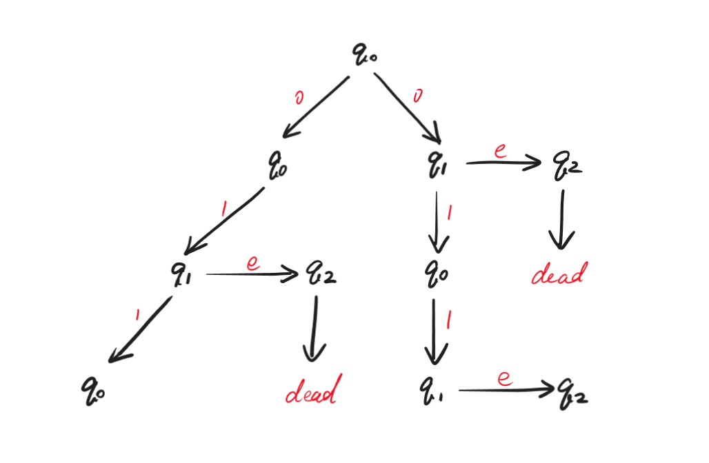
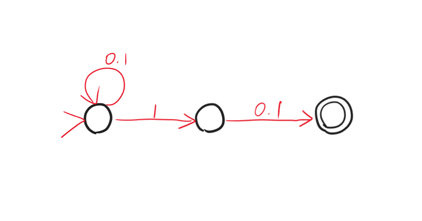

Lec4
一般函数
一般函数与布尔函数
之前考虑的都是有限函数，即输入和输出长度固定的函数。接下来考虑一般函数：
$$f:\{0,1\}^*\rightarrow\{0,1\}^*$$
要看一般函数的可计算性，只需要看其中的一类函数，即布尔函数：
$$bf:\{0,1\}^*\rightarrow\{0,1\}$$
原因是，任何一般函数 $f$ 都有一个对应的可计算性一致的布尔函数 $bf$，定义为：
$$bf(x,i,c)=\begin{cases} f(x)_i & \text{if } c=0, i<|f(x)|\\ 1 & \text{if } c=1, i<|f(x)|\\ 0 & \text{if } i\geqslant |f(x)| \end{cases}$$
可以利用 $f$ 描述 $bf$：
可以利用 $bf$ 描述 $f$：
综上：$f$ 和 $bf$ 的可计算性一致，我们只需要考虑布尔函数的可计算性。
Language
给定 $f:\{0,1\}^*\rightarrow\{0,1\}$，对应一个集合：
$$A_f=\{x\in\{0,1\}^*:f(x)=1\}$$
即函数值为 $1$ 的 $01$ 串的集合。这个集合称为 $f$ 的 language。
$f$ 和 $A_f$ 是等价的表述，即 compute a function = decide a language。
Deterministic Finite Automaton (DFA)
DFA Graph
现在以一个经典的布尔函数——异或为例：
$$\text{XOR}:\{0,1\}^*\rightarrow\{0,1\}$$
$$\text{XOR}(x)=\sum\limits_{i=0}^{|x|-1}x_i\mod 2$$
即：有奇数个 $1$ 结果就为 $1$；有偶数个 $1$ 结果就为 $0$。
$\text{XOR}$ 不能用之前的电路模拟，因为输入长度不固定；但显然可计算：
从程序中可以看出：$\text{XOR}$ 是 one-pass（从左到右只扫描一遍）、constant-memory（不算输入的话内存空间为常数级别）的。
我们可以用一张图来表示：

Note
图中的无边箭头指向的是初始状态；双边的圆圈是接受状态。概念见下文。
称为 deterministic finite automaton (DFA)。
DFA 的数学定义：
$$M=(K,s,F,\delta)$$
- $K$：有限状态集合
- $s\in K$：初始状态
- $F\subseteq K$：接受状态（accepting state）集合，即输出为 $1$ 的状态集合
- $\delta:K\times\{0,1\}\rightarrow K$：状态转移函数
给定长度为 $n$ 的输入 $x_0x_1...x_{n-1}$，每次读一位，来确定下一个状态是什么。即 $s_0=s$，$s_1=\delta(s_0,x_0)$，$s_2=\delta(s_1,x_1)$，依此类推，直到 $s_n=\delta(s_{n-1},x_{n-1})$。最后如果 $s_n\in F$，则 accept，否则 reject。
DFA $M$ 计算了一个布尔函数 $f$，当且仅当 $M$ accept $x$ $\Leftrightarrow$ $f(x)=1$。
DFA $M$ 决定了一个 language $A$，当且仅当 $M$ accept $x$ $\Leftrightarrow$ $x\in A$。
给定一个 DFA，只能判定唯一一个 language。
Regular Language
能被 DFA 决定的 language 称为 regular language。
Example
$\emptyset$ 是 regular 的：

$\{0,1\}^*$ 是 regular 的：

$\{e\}$ 是 regular 的：

$\{w\in\{0,1\}^*: w \text{ contains 101 as substring}\}$ 是 regular 的：

并不是所有布尔函数都是 regular 的。因为 DFA 每一项都有限，说明任意 DFA 都能编码，因此可数；然而布尔函数是不可数的。
Theorem 1
若 language $A$ 和 $B$ 是 regular 的，那么 $A\cup B$ 也是 regular 的。
Proof
存在两个 DFA $M_A$，$M_B$，分别判定 $A$ 和 $B$：
$$M_A=(K_A,s_A,F_A,\delta_A)$$
$$M_B=(K_B,s_B,F_B,\delta_B)$$
构建新的 DFA $M$，使得 $M$ 判定 $A\cup B$：
$$M=(K,s,F,\delta)$$
- $K=K_A\times K_B$，即状态组
- $s=(s_A,s_B)$
- $F=\{(q_A,q_B)\in K_A\times K_B: q_A\in F_A \text{ or } q_B\in F_B\}$
- $\delta((q_A,q_B),a)=(\delta_A(q_A,a),\delta_B(q_B,a))$
Theorem 2
若 language $A$ 和 $B$ 是 regular 的，那么 $AB$ 也是 regular 的，这里的 $AB$ 指的是字符串拼接。
但此时无法立刻找到 DFA 进行判定，需要引入新的概念。
Non-deterministic Finite Automaton (NFA)
除了 DFA，还有 non-deterministic finite automaton (NFA)。
例如：

我们可以看出与 DFA 的区别：
- 下一状态不唯一，例如 $q_0$ 接收 $0$ 后，下一个状态可以是 $q_0$，也可以是 $q_1$；
- 可以没有下一个状态，例如 $q_2$，因此如果接下来还有输入，NFA 就会 dead；
- e-transition，例如 $q_1$ 可以不接收任何输入直接转移到 $q_2$。
NFA 的数学定义：
$$N=(K,s,F,\Delta)$$
其中 $\Delta$ 与 DFA 的 $\delta$ 不同：$\delta$ 实际是一个函数，给定输入就会有对应输出；$\Delta$ 是一个关系，可以表示为三元组的集合，即 $\Delta\subseteq K\times\{0,1,e\}\times K$。
以上图为例，$\Delta=\{(q_0,0,q_0),(q_0,0,q_1),(q_0,1,q_1),(q_1,0,q_2),(q_1,1,q_0),(q_1,e,q_2)\}$
接下来考虑计算过程。假设输入为 $011$：

最后，只要所有可能的结果状态中有一个在接受状态集合 $F$ 中，就 accept，否则 reject。
Example
考虑 language $\{w\in\{0,1\}^*:\text{the second symbol from the end of }w\text{ is 1}\}$，即倒数第二位为 1，用 NFA 表示如下：
